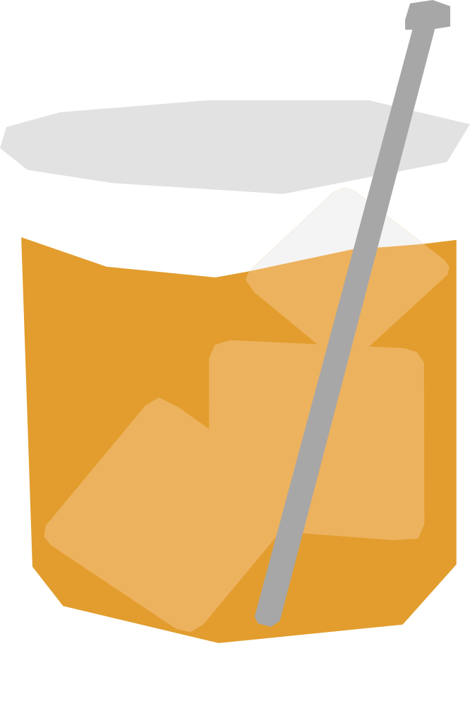

¿Cómo se oxida el whisky?
El Rusty Nail es un cóctel escocés hecho con whisky y Drambuie, un licor de whisky con miel y especias. Su nombre significa “clavo oxidado” y se cree que hace referencia a su característico color ámbar, aunque también existe la historia popular de que antiguamente se mezclaba con un clavo oxidado.
RECETA
- 45 ml whisky escocés
- 25 ml Drambuie
- Hielo en cubos
- Agrega el whisky y el Drambuie a un vaso con hielo.
- Mezcla suavemente hasta enfriar.
- Agrega un twist de cáscara de limón
Vaso: Old fashioned / vaso bajo